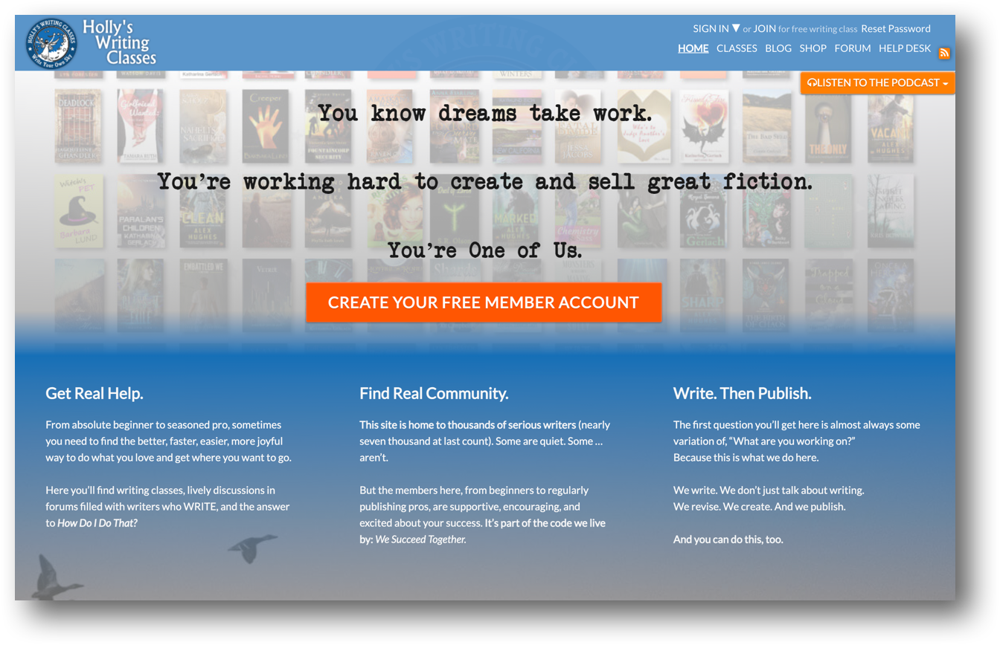
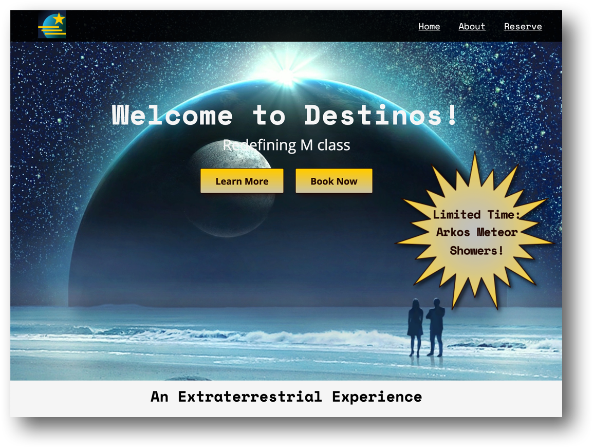
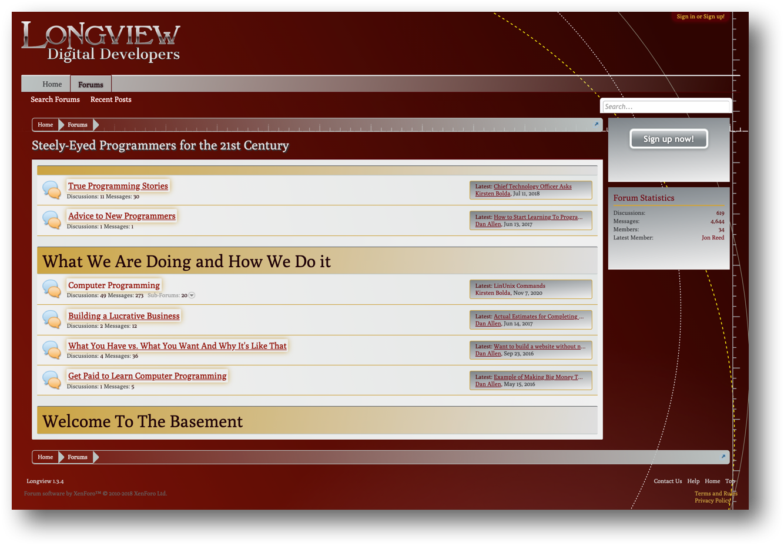

Hello and Welcome!
I am a programmer, scientist, artist, and writer, and love combining all these interests to build websites and applications that make our daily life a little better.
I'm currently enrolled in CodeCademy's Front End Engineer path, but can't wait to get out into the world with my own creations.
Stay tuned for future developments!
Projects
- Front Page of Novel Writing Class Site 
- Sample Responsive Web Page 
- Styling For XenForo Forum Software 
Layout and responsive styling created with Blocs application for front page of a site teaching techniques for writing and promotion of fiction writing.
Sample website of a fictional planet offering R&R for weary, well-heeled astronauts of the future.
CSS styling for community forum software used for small developer group.
Skills
- HTML5
- CSS 3
- JS
- GitHub
- Markdown
- Digital Ocean
- Sketch
- Deviant Art
- GIMP
 Inkscape
Inkscape- Blocs
- WordPress
- InVision
- XenForo